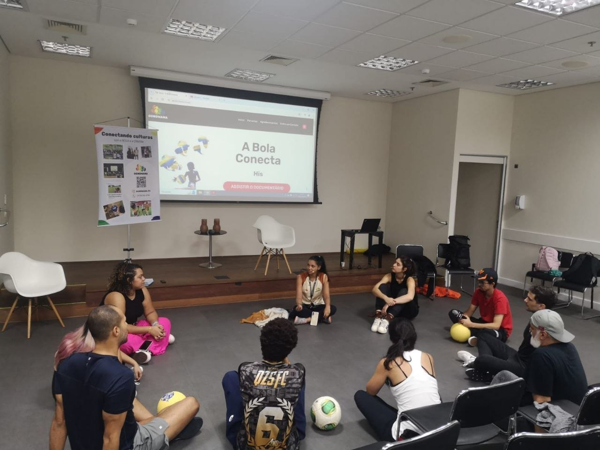
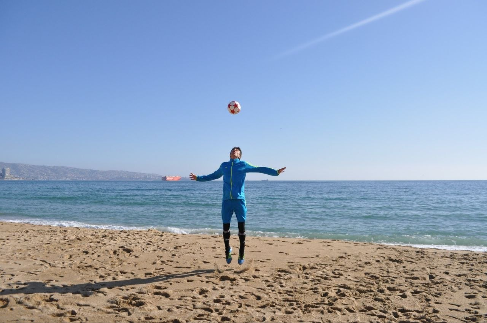
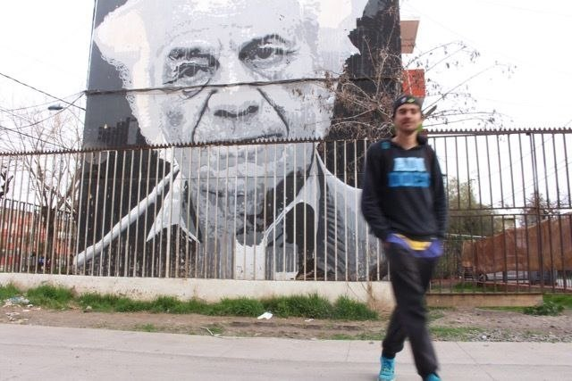

Botoes
Manual de marca
Uma marca para pensar com o corpo.
Esta pagina traduz a identidade do Homo Ludens Blog em decisoes visuais: cor, fotografia e componentes. E uma ferramenta de criterio, nao uma vitrine decorativa.
01 / Paleta
Papel, cancha, campo, sol e travessia.
Papel
#F2EDE3
fundo principal
Claro
#FFF9ED
cards e formularios
Grafite
#2B2B2B
texto e decisoes
Folha
#3B6E2A
campo e continuidade
Quadra
#A8392C
corpo e intensidade
Terra
#D87A3B
rua e calor visual
Sol
#F6C026
foco e descoberta
Travessia
#2C6BB5
ponte e circulacao
Linha
#D8CDB8
bordas e grade
Tinta
#6E675B
texto secundario
Contrastes aprovados
Grafite sobre papel12.14
Tinta sobre claro5.33
Claro sobre quadra6.09
Claro sobre folha5.80
Grafite sobre sol8.42
Regras de alerta
Claro sobre terra2.96
Sol sobre claro1.60
Folha sobre grafite2.33
Maximo de acentos fortes por tela2
Tipografia fechada
Fraunces pensa com o corpo.
Source Sans 3 sustenta a leitura longa. IBM Plex Mono marca datas, dominios e pequenos registros de arquivo.
02 / Fotografia
Imagem como prova de mundo.

Roda, escuta e corpo coletivo
Gesto antes da palavra
Territorio como arquivo03 / Componentes
Poucos blocos, bem reconheciveis.
Botoes
HL
Publicacao externa
Um arquivo vivo de perguntas em movimento.
Card com dominio, titulo, descricao e sinal visual. Deve dar realidade sem virar bloco pesado.
Onde tem jogo, tem mundo tentando se explicar.
Nota editorial
Callout serve para contexto, criterio e leitura de margem. Nao substitui paragrafo.
Formulario
Enviar conviteCaderno publico de Sebastián Acevedo Vásquez.
Inicio · Tipografia · Paleta